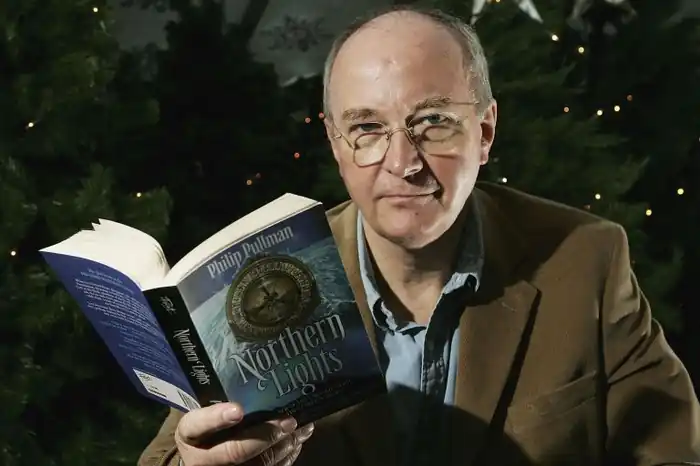

Англійський письменник, педагог. Відомий як автор фантастичних книг для дітей, найбільш популярні з яких входять в авторський цикл "Темні початки".
Філіп Пулман (поширене також написання Пуллман) народився в Норідже (Англія) в сім'ї військового льотчика. У дитинстві сім'я Пулмана часто переїжджала в зв'язку з роботою батька і Філіп побував в Зімбабве і Південній Родезії. У 1953 році батько хлопчика загинув в авіакатастрофі. Мати Філіпа вступила в другий шлюб, і сім'я перебралася в Австралію де Пулман прожив до 1957 року. Потім майбутній письменник з матір'ю і вітчимом повернувся в Англію, де закінчив середню освіту. У 1963 році Пулман продовжив навчання в Оксфорді, в Ексетер-коледжі, де вивчав англійську філологію.
У 1970 році Пулман одружився на Джудіт Спеллер і почав викладати в різних Оксфордських школах. У 1972 році вийшла перша книга письменника — The Haunted Storm. Книга була розрахована на дорослу аудиторію і не принесла Пулмані значного успіху. За родом своєї діяльності Пулмані доводилося писати сценарії для шкільних постановок. Саме цей досвід надихнув письменника на написання першої підліткової книги — Граф Карлштайн. У 1986 році письменник стає викладачем у Вестмінстерському коледжі, де він пропрацював вісім років, вів курси по викторианскому роману і фольклору. У 1995 році вийшла в світ перша книга циклу "Темні початки" — роман Північне сяйво. Книга стала популярною, Пулман був нагороджений Медаллю Карнегі, Guardian Children's Book Award і Уітбердской премією. Поряд з позитивними відгуками книга викликала і ряд критичних виступів в першу чергу з боку релігійних організацій. Пулмана звинуватили в наклепі на церкву і антиклерикальної пропаганди. Ці звинувачення отримали останнім часом новий поштовх з виходом у 2010 році книги Пулмана "Хороша людина Ісус і Христос-негідник". Успіх Північного сяйва дозволив Пулмані залишити викладацьку діяльність і зосередитися на літературі. У наступні роки вийшли продовження Темних початків, а також безліч інших книг письменника. У 2004 році Пулман частково повернувся до викладання і зараз періодично читає лекції в своїй alma mater, Ексетер-коледжі, Оксфорд. У тому ж самому році він був обраний президентом Товариства Вільяма Блейка, а через рік нагороджений однією з найпрестижніших нагород в дитячій літературі — Премією Астрід Ліндгрен. З 2008 року письменник працює над новою книгою циклу "Темні початки" з робочою назвою "Книга пилу". За власними словами письменника ця книга повинна стати головною в його письменницьку кар'єру, але робота над нею просувається насилу (дані на 2011 рік). Проживає в Оксфорді з дружиною і двома дорослими дітьми, відомий діяльністю на захист громадянських свобод. Цікаві факти з життя Пулман стурбований дедалі більшим поширенням тестування як метод оцінки знань. За словами Пулмана він регулярно отримує від релігійних фанатиків гнівні листи з прокльонів і навіть погрозами. Назва циклу "Темні початки" взято з поеми Джона Мільтона "Втрачений рай", великим шанувальником якого Пулман є. Крім цього на творчість Пулмана вплинула поезія Вільяма Блейка, який також входить до числа улюблених авторів письменника. Нагороди письменника 1995 — Carnegie Medal за книгу "Північне сяйво" 1995 — премія British Fantasy Society за книгу "Північне сяйво" Рік випуску 1996 — The Guardian Prize за книгу "Північне сяйво" 2001 — Уітбердовская премія (пізніше перейменована в Премію Коста) за книгу "Янтарне скло" 2001 — The British Book Awards як кращий автор року 2002 — Eleanor Farjeon Award for children's literature 2005 — Премія імені Астрід Ліндгрен 2005 — Christopher Tower Poetry Prize 2007 — премія Карнегі (Carnegie Medal). Роман "Північне сяйво" названий кращою книгою для дітей за останні сімдесят років. Крім цього Пулман є доктором Оксфордського університету і почесним професором Бангорского університету. Бібліографія цикли творів Темні початки [His Dark Materials] Once Upon a Time in the North (2008) Північне сяйво (Золотий компас / Полярні вогні) [Northern Lights] (1995) Чудовий ніж [The Subtle Knife] (1997) Бурштиновий телескоп [The Amber Spyglass] (2000) Оксфорд Ліри [Lyra's Oxford] (2003) Галерея воскових фігур [Thunderbolt's Waxwork / The New-Cut Gang] Галерея воскових фігур [Thunderbolt's Waxwork] (1994) Бал газопроводчіков [The Gas-Fitters 'Ball] (1998) Таємничі пригоди Саллі Локхарт [The Sally Lockhart quartet] Рубін в імлі [The Ruby in the Smoke] (1985) Тінь "Полярної зірки" [The Shadow in the North] (1988) Тигр в колодязі [The Tiger in the Well] (1990) Олов'яне принцеса [The Tin Princess] (1994) Цикл без назви The Broken Bridge (1990) The Butterfly Tattoo (2001) Твори поза циклів The Haunted Storm (1972) Galatea (1976) Граф Карлштайн [Count Karlstein] (1982) How to Be Cool (1987) Джек Пружинні п'яти [Spring-Heeled Jack] (1989) The White Mercedes (1992) The Wonderful Story of Aladdin and the Enchanted Lamp (1995) Дочка винахідника феєрверків [The Firework-Maker's Daughter] (1995) Годинниковий механізм, або Все заведено [Clockwork, or All Wound Up] (1996) Mossycoat (1998) I Was A Rat! (1999) Puss in Boots (2000) Опудало і його слуга [The Scarecrow And His Servant] (2004) The Good Man Jesus and the Scoundrel Christ (2010)